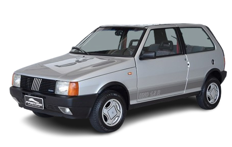

UNO 1.5
"Com a energia dos anos 80 e o espírito de um pequeno atleta, o Uno 1.5R foi a faísca inicial que acendeu a paixão pela esportividade em uma geração, mostrando que performance não tem tamanho

HISTÓRIA
Tudo começou em 1987, com o Uno 1.5R. Com o motor de 86 CV e mais potente da linha, o hatch se diferenciava pelo design. Tinha faixas laterais alusivas à versão, tampa traseira pintada de preto fosco, calotas diferenciadas em formato de disco de telefone e bancos de tecido com uma faixa vermelha ao centro.
Em 1989, o modelo passou por pequenas mudanças. O motor continuava o mesmo, mas a suspensão ganhou novo acerto. Visualmente, as faixas laterais foram modernizadas, apesar de não ser o mais rápido dos esportivos nacionais, o Uno R se sobressaía frente ao Volkswagen Gol GTS e ao Ford Escort XR3 pelo preço consideravelmente mais barato.
Em 1990, a marca lançou o Uno 1.6R. Com curso mais longo dos pistões, o modelo ficou mais potente. Passou dos 85 cv para 88 cv e o torque pulou de 12,9 kgf.m para 13,2 kgf.m. Apesar da diferença parecer pequena, o desempenho melhorou, visto que o Uno era extremamente leve - pesava pouco mais de 800 kg.
Motor 2.0 16V Ecotec (inicialmente a gasolina com 136 cv; depois flex com até 140 cv).
FICHA TECNICA
Modelo: Uno 1.5R
Ano: 1987–1992
Motor: 1.5 gasolina
Potência: 86 cv
Torque: 12,9 kgfm
0–100 km/h: ≈12,5 s
Vel. Máx: ≈165 km/h
Peso: 875 kg
Tração: Dianteira
Câmbio: Manual 5 marchas
Dimensões (C×L×A): 3.690×1.515×1.420 mm
CURIOSIDADE
Uma curiosidade marcante do Fiat Uno 1.5R é que ele foi o primeiro carro esportivo da Fiat no Brasil com características mais "quentes", lançado antes mesmo da era turbo que viria a dominar o segmento esportivo da marca. Lançado em 1987, o Uno 1.5R não usava turbo, mas já trazia um motor 1.5 a gasolina (ou álcool) com um carburador de corpo duplo e um acerto mais esportivo, entregando 86 cv (na versão a álcool), o que era um número expressivo para um carro tão leve e compacto na época.
GALERIA
Imagens do Uno 1.5
Canal: Renato Ballote